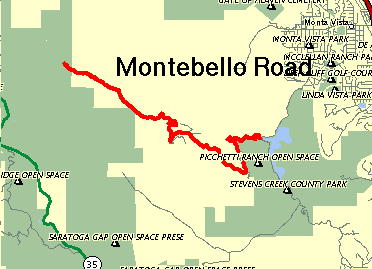

Week 1 results are in!!!
Click here to check 'em out.
The 1996 Low Key Hillclimb Series opens with the same climb which began the 1995 version, Montebello Road. Meet series coordinator Smilin' Kevin Winterfield at Steven's Creek Resevoir to sign in, see acquantenances from last year, and make new friends for this year. After a short promenade to the base of Montebello Road, the horn will sound and the fun will begin. The 1996 Low-Key Hillclimbs will be on!
Montebello Road, with its accessibility, challenging slope, low traffic volume, and amazing views is a nearly ideal venue to open the series. Whether you are testing your pain threshold with the lead group or just out to enjoy a ride to the summit with your fellow cyclists, whether you have a Spinergy-equipped custom Merlin Titanium or an entry-level mountain bike, whether you are riding 400 miles per week or 40 miles per month, and whether you're gunning for the series leadership or just out for a workout, you'll find the Low-Key Montebello Hillclimbs a great way to spend the morning.
After reaching the summit, riders have the option of continuing along the challenging but rideable fire roads to Page Mill Road near Skyline Road, from where one can descend to Foothill Expressway to complete the loop back to Steven's Creek Resevoir. Or, call it a day and just turn around to descend back Montebello.
| Distance: | 5.2 miles |
| Climbing: | 2020 feet |
| Format: | Mass Start |
| Start: | Meet in parking lot at Stevens Creek Resevoir just north of Montebello Road. Rider will promenade to base of Montebello where timer will start. |
| Finish: | top of paved road, just before gate to dirt section. |
| Reg Time: | 10:00 am to 10:20 am |
| Start Time: | 10:30 am |
| Fee: | 3 bucks |
| Weather: | Hot, hot, hot!!! |
| Map: |  |
djconnel@flash.net
{kind=link}